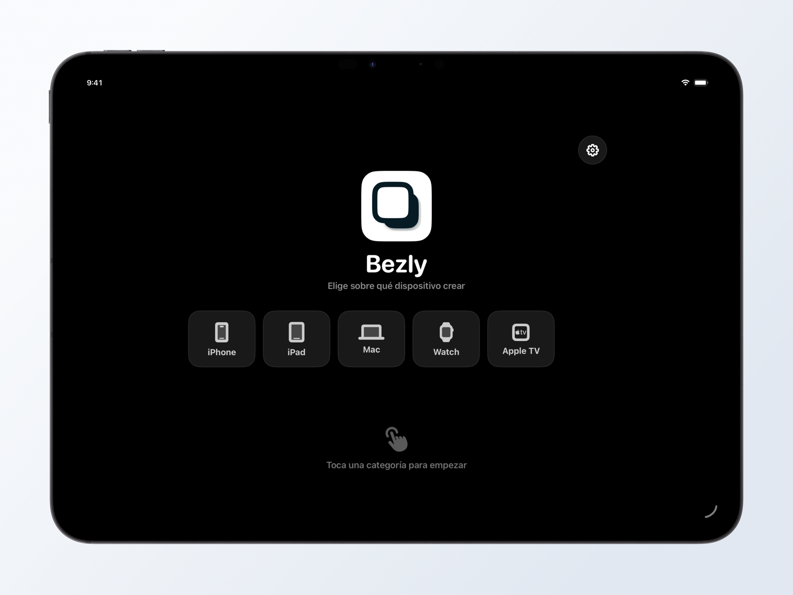
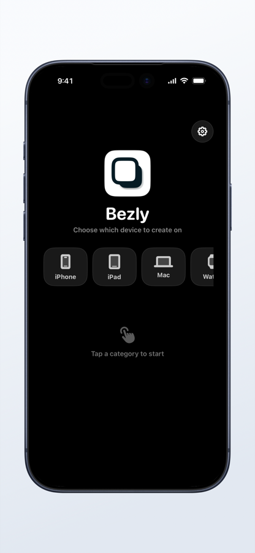
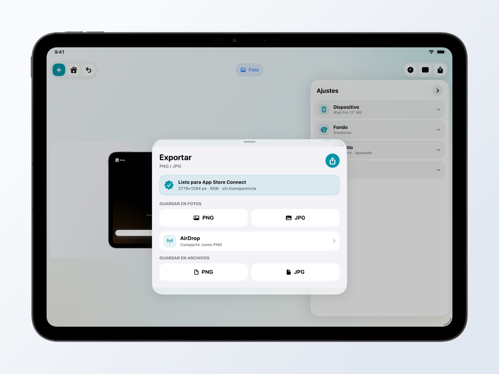
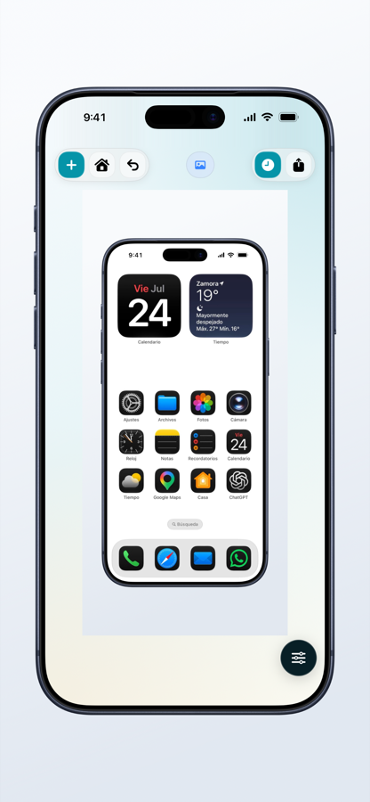
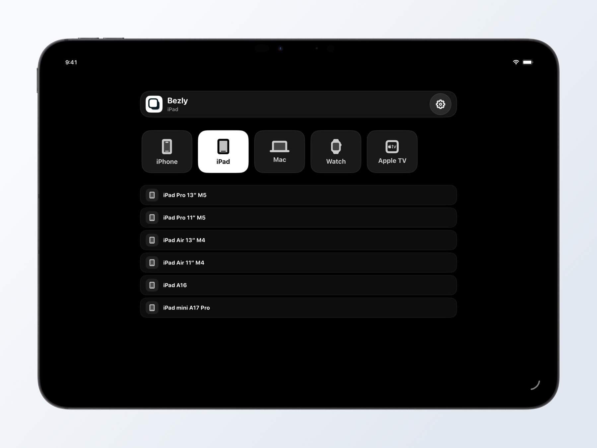
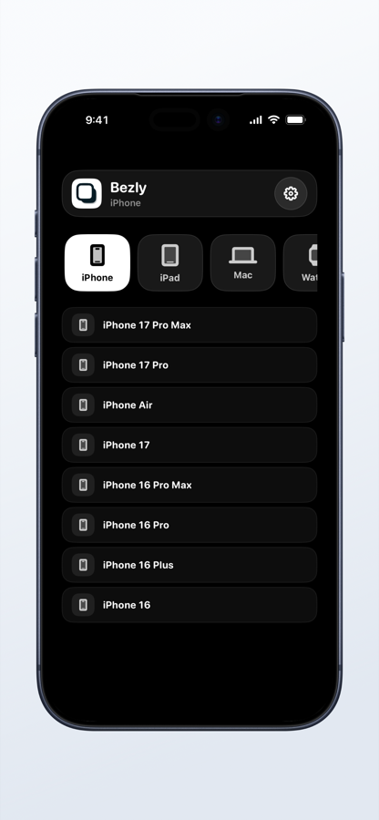
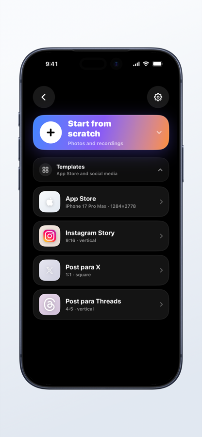
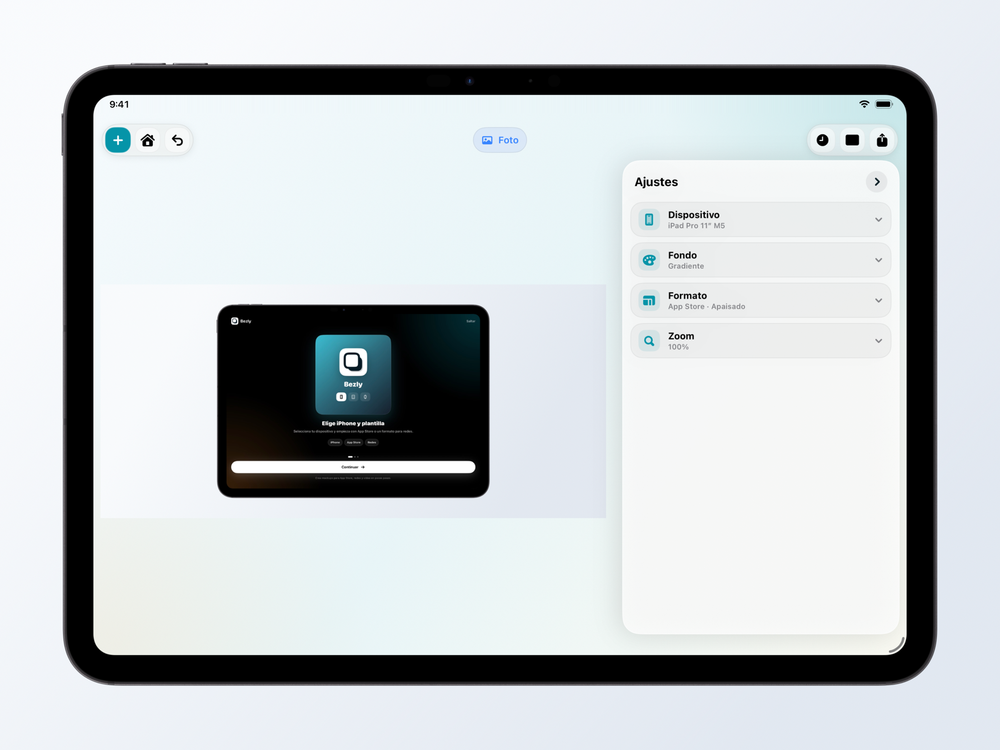
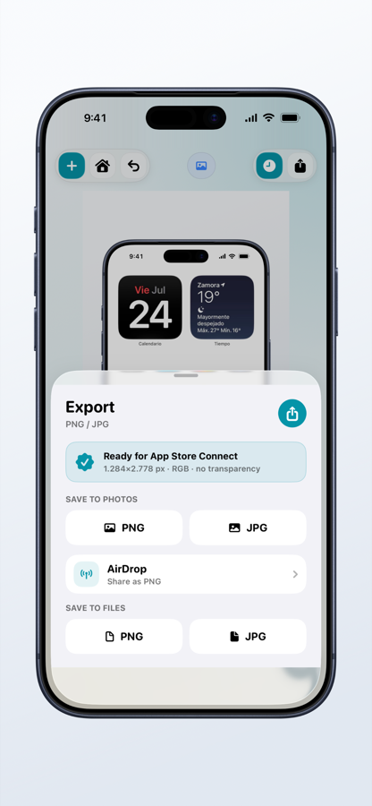

01
Empieza por el formato
Elige un dispositivo
Crea para iPhone, iPad, Mac, Apple Watch o Apple TV desde un punto de partida limpio y reconocible.


 clr91dev
clr91dev
Un estudio de mockups completo para iPhone y iPad
Convierte capturas y grabaciones en recursos pulidos para App Store y redes desde iPhone y iPad.


Del archivo al resultado final
El mismo proceso se adapta a la pantalla del iPhone y aprovecha el espacio extra del iPad.
Empieza por el formato
Crea para iPhone, iPad, Mac, Apple Watch o Apple TV desde un punto de partida limpio y reconocible.


Encuadre preciso
Selecciona el modelo concreto para que la captura encaje con sus proporciones, bordes y cámara.


Menos preparación
Usa formatos preparados para App Store, Instagram, X y Threads o comienza desde cero.

Tu composición
Combina fondos, orientación, escala y barra de estado. En iPad, el lienzo y los controles conviven sin estorbarse.

Salida correcta
Guarda en Fotos o Archivos, comparte por AirDrop y genera las dimensiones exactas que acepta App Store Connect.

Todo lo necesario, sin ruido
Mantén la original o aplica una barra 9:41 limpia y coherente.
Sólidos, degradados, imágenes o transparencia real.
Adapta el lienzo a cada publicación y dispositivo.
Trabaja con capturas estáticas y grabaciones de pantalla.
Exporta el dispositivo aislado como PNG transparente.
Genera archivos RGB con dimensiones compatibles.
Privacidad por diseño
La edición y la exportación se realizan en el dispositivo. No es necesario subir el contenido a un servidor para crear un mockup.
Leer la política de privacidadBezly
Crea mockups profesionales sin mover el trabajo a otro dispositivo.